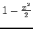
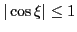
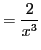

The material for the remainder of this book was taken from Sean Mauch's
Applied mathematics text13.9.
Theorem 13.15.1
Taylor's Theorem of the Mean.
If

is
times continuously differentiable in
then there
exists a point
such that
For the case
, the formula is
which is just a rearrangement of the terms in the theorem of the mean,
One can use Taylor's theorem to approximate functions with polynomials.
Consider an infinitely differentiable function and a point  .
Substituting
.
Substituting  for
for  into Equation 13.20 we obtain,
into Equation 13.20 we obtain,
If the last term in the sum is small then we can approximate our function
with an order polynomial.
The last term in Equation 13.15 is called the remainder
or the error term,
Since the function is infinitely differentiable,
exists and
is bounded. Therefore we note that the error must vanish as
because of the
 factor. We therefore suspect that our
approximation would be a good one if is close to
factor. We therefore suspect that our
approximation would be a good one if is close to  . Also note that
eventually grows faster than ,
. Also note that
eventually grows faster than ,
So if the derivative term,
, does not grow to quickly, the
error for a certain value of will get smaller with increasing  and
the polynomial will become a better approximation of the function.
(It is also possible that the derivative factor grows very quickly and
the approximation gets worse with increasing .)
and
the polynomial will become a better approximation of the function.
(It is also possible that the derivative factor grows very quickly and
the approximation gets worse with increasing .)
Example 13.15.1 Consider the function
. We want a polynomial approximation of
this function near the point

. Since the derivative of
is
, the value of all the derivatives at
is
.
Taylor's theorem thus states that
for some
. The first few polynomial approximations of
the exponent about the point
are
The four approximations are graphed in Figure
13.7.
Figure 13.7:
Finite Taylor Series Approximations of  , ,
to .
, ,
to .
|
Note that for the range of we are looking at, the approximations
become more accurate as the number of terms increases.
Here is one way to compute these approximations using SAGE:
[fontsize=\scriptsize,fontfamily=courier,fontshape=tt,frame=single,label=\sage]
sage: x = var("x")
sage: y = exp(x)
sage: a = lambda n: diff(y,x,n)(0)/factorial(n)
sage: a(0)
1
sage: a(1)
1
sage: a(2)
1/2
sage: a(3)
1/6
sage: taylor = lambda n: sum([a(i)*x^i for i in range(n)])
sage: taylor(2)
x + 1
sage: taylor(3)
x^2/2 + x + 1
sage: taylor(4)
x^3/6 + x^2/2 + x + 1
Example 13.15.2 Consider the function
. We want a polynomial approximation of
this function near the point
. The first few derivatives of

are
It's easy to pick out the pattern here,
Since
and
the
-term approximation of the
cosine is,
Here are graphs of the one, two, three and four term approximations.
Figure 13.8:
Taylor Series Approximations of ,
,
to .
|
Note that for the range of we are looking at, the approximations
become more accurate as the number of terms increases.
Consider the ten term approximation of the cosine about ,
Note that for any value of
,
. Therefore the absolute
value of the error term satisfies,
Note that the error is very small for , fairly small but non-negligible
for
and large for . The ten term approximation of
the cosine, plotted below, behaves just we would predict.
Figure 13.9:
Taylor Series Approximation of
to .
|
The error is very small until it becomes non-negligible at
and large at
.
Example 13.15.3 Consider the function
. We want a polynomial approximation of
this function near the point

. The first few derivatives of
are
 |
|
|
|
|
|
|
|
|
|
 |
|
|
|
|
The derivatives evaluated at
are
for
By Taylor's theorem of the mean we have,
Below are plots of the 1, 2, and 3 term approximations.
Figure 13.10:
Taylor series (about ) approximations of  ,
,
to .
,
,
to .
|
Note that the
approximation gets better on the interval  and worse outside this
interval as the number of terms increases. The Taylor series converges to
only on this interval.
and worse outside this
interval as the number of terms increases. The Taylor series converges to
only on this interval.
david joyner
2008-08-11